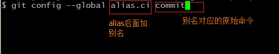
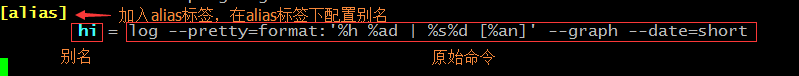

为啥要设置命令的别名
有时候我们会打一些比较长的命令（如：git log --pretty=format:'%h %ad | %s%d [%an]' --graph --date=short），如果这种长命令是我们经常要使用的话，那么是非常崩溃的，所有我们需要配置别名来替代这种比较长的命令，提升工作效率。
设置命令的别名的第一种方法

设置命令的别名的第二种方法（推荐）
直接修改config文件（用户级别的配置文件在：~/.gitconfig下，项目级别的配置文件在：项目位置/.git/config下）
